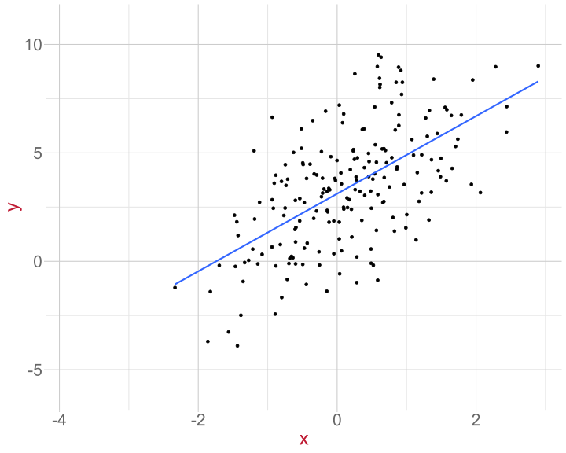

Linear Model: Introduction
Data Analysis for Psychology in R 2
Emma Waterston
Department of Psychology
University of Edinburgh
2025–2026
Course Overview
| Introduction to Linear Models | Intro to Linear Regression |
| Interpreting Linear Models | |
| Testing Individual Predictors | |
| Model Testing & Comparison | |
| Linear Model Analysis | |
| Analysing Experimental Studies | Categorical Predictors & Dummy Coding |
| Effects Coding & Coding Specific Contrasts | |
| Assumptions & Diagnostics | |
| Bootstrapping | |
| Categorical Predictor Analysis |
| Interactions | Interactions I |
| Interactions II | |
| Interactions III | |
| Analysing Experiments | |
| Interaction Analysis | |
| Advanced Topics | Power Analysis |
| Binary Logistic Regression I | |
| Binary Logistic Regression II | |
| Logistic Regression Analysis | |
| Exam Prep and Course Q&A |
This Week’s Learning Objectives
Understand the link between models and functions
Understand the key concepts (intercept and slope) of the linear model
Understand what residuals represent
Understand the key principles of least squares
Be able to specify a simple linear model (labs)
Part 1: Functions & Models
What is a Model?
Pretty much all statistics is about models
A model is a formal representation of a system
Put another way, a model is an idea about the way the world is
A Model as a Function
We tend to represent mathematical models as functions
A function is an expression that defines the relationship between one variable (or set of variables) and another variable (or set of variables)
It allows us to specify what is important (arguments) and how these things interact with each other (operations)
This allows us to make and test predictions
Example
To think through these relations, we can use a simpler example
Suppose I have a model for growth of babies 1
\[ \text{Length} = 55 + 4 * \text{Age} \]
- I’m using this model to formally represent the relationship between a baby’s age and their length
Visualising a Model
The x-axis shows
AgeThe y-axis shows
LengthThe black line represents our model: \(y = 55+4x\)
Models as “a State of the World”
- Let’s suppose my model is true
- That is, it is a perfect representation of how babies grow
- What are the implications of this?
- My models creates predictions
- IF my model is a true representation of the world, THEN data from the world should closely match my predictions
- My models creates predictions
Predictions and Data
| Age | PredictedLength |
|---|---|
| 10.0 | 95 |
| 10.2 | 96 |
| 10.5 | 97 |
| 10.8 | 98 |
| 11.0 | 99 |
| 11.2 | 100 |
| 11.5 | 101 |
| 11.8 | 102 |
| 12.0 | 103 |
- Our predictions are points which fall on our line (representing the model, as a function)
- The arrows are showing how we can use the model to find a predicted value
Predictions and Data
- Consider the predictions when the children get a lot older…
What does this say about our model?
If we were to collect actual data on height and age, will our observations fall on the line?
| Age | Year | Prediction | Prediction_M |
|---|---|---|---|
| 216 | 18 | 919 | 9.19 |
| 228 | 19 | 967 | 9.67 |
| 240 | 20 | 1015 | 10.15 |
| 252 | 21 | 1063 | 10.63 |
| 264 | 22 | 1111 | 11.11 |
| 276 | 23 | 1159 | 11.59 |
| 288 | 24 | 1207 | 12.07 |
| 300 | 25 | 1255 | 12.55 |
Length & Age is Non-Linear
- Our red line is plotted based on the mean length for different ages real data
How Good is my Model?
How might we judge how good our model is?
Model is represented as a function
We see that as a line (or surface if we have more things to consider)
That yields predictions (or values we expect if our model is true)
We can collect data
If the predictions do not match the observed data (observations deviate from our line), that says something about our model
Models and Statistics
In statistics we (roughly) follow this process:
We define a model that represents one state of the world (probabilistically)
We collect data to compare to it
These comparisons lead us to make inferences about how the world actually is, by comparison to a world that we specify by our model
Deterministic vs Statistical Models
A deterministic model is a model for an exact relationship:
\[ y = \underbrace{3 + 2 x}_{f(x)} \]
A statistical model allows for case-by-case variability:
\[ y = \underbrace{3 + 2 x}_{f(x)} + \epsilon \]

Part 2 & 3: Linear Model - Intercept, Slope, and Residuals
Linear Model
For the majority of the course, we will focus on how we move from the idea of an association to estimating a model for the relationship
We’ll mostly look at the linear model
Assumes the relationship between the outcome variable and the predictor(s) is linear
Describes a continuous outcome variable as a function of one or more predictor variables
Example
Question: Do students who study more get higher scores on the test?
| student | hours | score |
|---|---|---|
| ID1 | 0.5 | 1 |
| ID2 | 1.0 | 3 |
| ID3 | 1.5 | 1 |
| ID4 | 2.0 | 2 |
| ID5 | 2.5 | 2 |
| ID6 | 3.0 | 6 |
| ID7 | 3.5 | 3 |
| ID8 | 4.0 | 3 |
| ID9 | 4.5 | 4 |
| ID10 | 5.0 | 8 |
Codebook
student= ID variable unique to each respondenthours= the number of hours spent studying. This will be our predictor ( \(x\) )score= test score. This will be our outcome ( \(y\) )
Scatterplot of Data

- The line represents the best model
Definition of the Line
The line can be described by two values:
Intercept: the point where the line crosses the \(y\) -axis and \(x = 0\)
Slope: the gradient of the line, or rate of change
Intercept and Slope
- height of the line (intercept)
- gradient of the line (slope)
Linear Model Equation
\[y_i = \beta_0 + \beta_1 x_{i} + \epsilon_i\]
\(y_i\) = the outcome variable (e.g.
score)\(x_i\) = the predictor variable, (e.g.
hours)\(\beta_0\) = intercept
\(\beta_1\) = slope
\(\epsilon_i\) = residual (we will come to this shortly)
Linear Model Equation
\[y_i = \beta_0 + \beta_1 x_{i} + \epsilon_i\]
- Why do we have \(i\) in some places and not others?
\(i\) is a subscript to indicate that each participant has their own value.
So each participant has their own:
- score on the test ( \(y_i\) )
- number of hours studied ( \(x_i\) ) and
- residual term ( \(\epsilon_i\) )
- What does it mean that the intercept ( \(\beta_0\) ) and slope ( \(\beta_1\) ) do not have the subscript \(i\)?
- It means there is one value for all observations.
- Remember the model is for all of our data
What is \(\epsilon_i\)?
\(\epsilon_i\), or the residual, is a measure of how well the model fits each data point.
It is the distance between the model line (on \(y\)-axis) and a data point.
\(\epsilon_i\) is positive if the point is above the line (red in plot)
\(\epsilon_i\) is negative if the point is below the line (blue in plot)
How to Find the Line?
The line represents a model of our data.
- In our example, the model that best characterises the relationship between hours of study and test score
In the scatterplot, the data are represented by points
So a good line is a line that is “close” to all points
The method that we use to identify the best-fitting line is the Principle of Least Squares
Part 4: Principle of Least Squares
Linear Model
- So far we have introduced the linear model:
\[y_i = \beta_0 + \beta_1 x_{i} + \epsilon_i\]
Where
- \(y_i\) is our measured outcome variable
- \(x_i\) is our measured predictor variable
- \(\beta_0\) is the model intercept
- \(\beta_1\) is the model slope
- \(\epsilon_i\) is the residual error (difference between the model predicted and the observed value of \(y\))
How do we calculate \(\beta_0\) and \(\beta_1\)?
Principle of Least Squares
The values \(\beta_0\) and \(\beta_1\) are typically unknown and need to be estimated from our data.
- We denote the “best” estimated values as \(\hat \beta_0\) and \(\hat \beta_1\)
We find the values of \(\hat \beta_0\) and \(\hat \beta_1\) (and thus our best line) using least squares
Least squares:
minimises the distances between the actual values of \(y\) and the model-predicted values of \(\hat y\)
that is, it minimises the residuals for each data point (the line is “close”)
Principle of Least Squares
- Formally, least squares minimises the residual sum of squares
Essentially:
- Fit a line
Principle of Least Squares
- Formally, least squares minimises the residual sum of squares
Essentially:
- Fit a line
- Calculate the residuals
Principle of Least Squares
- Formally, least squares minimises the residual sum of squares
Essentially:
- Fit a line
- Calculate the residuals
- Square them
Principle of Least Squares
- Formally, least squares minimises the residual sum of squares
Essentially:
- Fit a line
- Calculate the residuals
- Square them
- Sum up the squares
Principle of Least Squares
- Formally, least squares minimises the residual sum of squares
Essentially:
- Fit a line
- Calculate the residuals
- Square them
- Sum up the squares
Why do you think we square the deviations?
Residual Sum of Squares
\[SS_{Residual} = \sum_{i=1}^{n}(y_i - \hat{y}_i)^2\]
Residual Sum of Squares
\[SS_{Residual} = \sum_{i=1}^{n}(\color{#BF1932}{y_i} - \hat{y}_i)^2\]
- Data = \(y_i\)
- This is what we have measured in our study
- For us, the test scores
Residual Sum of Squares
\[SS_{Residual} = \sum_{i=1}^{n}(y_i - \color{#BF1932}{\hat{y}_i})^2\]
- Data = \(y_i\)
- This is what we have measured in our study
- For us, the test scores
- Predicted value = \(\hat{y}_i = \hat \beta_0 + \hat \beta_1 x_i\)
- Or, the value of the outcome our model predicts given someone’s values for predictors
- In our example: given you study for 4 hours, what test score does our model predict you will get?
- Or, the value of the outcome our model predicts given someone’s values for predictors
Residual Sum of Squares
\[SS_{Residual} = \sum_{i=1}^{n}(\color{#BF1932}{y_i - \hat{y}_i})^2\]
- Data = \(y_i\)
- This is what we have measured in our study
- For us, the test scores.
- This is what we have measured in our study
- Predicted value = \(\hat{y}_i = \hat \beta_0 + \hat \beta_1 x_i\)
- Or, the value of the outcome our model predicts given someone’s values for predictors
- In our example: given you study for 4 hours, what test score does our model predict you will get?
- Or, the value of the outcome our model predicts given someone’s values for predictors
- Residual = Difference between \(y_i\) and \(\hat{y}_i\)
Key Point
- It is worth a brief pause as this is a very important point
The values of the intercept and slope that minimise the sum of square residual are our estimated coefficients from our data
Minimising the \(SS_{residual}\) means that across all our data, the predicted values from our model are as close as they can be to the actual measured values of the outcome
Calculating the Slope
\[\hat \beta_1 = \frac{SP_{xy}}{SS_x}\]
- \(SP_{xy}\) = sum of cross-products:
\[SP_{xy} = \sum_{i=1}^{n}(x_i - \bar{x})(y_i - \bar{y})\]
- \(SS_x\) = sums of squared deviations of \(x\):
\[SS_x = \sum_{i=1}^{n}(x_i - \bar{x})^2\]
- Where:
- \(x_i\) = predictor data (in our example,
hours) - \(y_i\) = outcome data (in our example,
scores) - \(\bar{y}\) = mean of \(y\)
- \(\bar{x}\) = mean of \(x\)
- \(n\) = total number of observations
- \(\Sigma\) = sum it all up
- \(x_i\) = predictor data (in our example,
Calculating the Intercept
\[\hat \beta_0 = \bar{y} - \hat \beta_1 \bar{x}\]
- Where:
- \(\hat \beta_1\) = slope estimate
- \(\bar{y}\) = mean of \(y\)
- \(\bar{x}\) = mean of \(x\)
Part 5: Simple Linear Model in R
Understanding the Linear Model Equation
\[\hat{y}_i = \color{blue}{b_0 \cdot{}}\color{orange}{1} \color{blue}{+b_1 \cdot{}} \color{orange}{x_i}\]
values of the linear model (coefficients)
values we provide (inputs)
- maps directly to R “formula” notation
y ~ 1 + x
lm in R
- In R, we use the
lm()function
- The first bit of code is the model formula:
- The outcome or DV appears on the left of ~
- The predictor(s) or IV appear on the right of ~
- We then give
Rthe name of the data set- This set must contain variables (columns) with the same names as you have specified in the model formula
lm in R
- First need some data:
- Look at first few rows:
lm in R
- Build and run model in
R, store in object named mod1:
lm in R
- Look at
summary()of output inR:
Call:
lm(formula = score ~ hours, data = test)
Residuals:
Min 1Q Median 3Q Max
-1.618 -1.077 -0.746 1.177 2.436
Coefficients:
Estimate Std. Error t value Pr(>|t|)
(Intercept) 0.400 1.111 0.36 0.728
hours 1.055 0.358 2.94 0.019 *
---
Signif. codes: 0 '***' 0.001 '**' 0.01 '*' 0.05 '.' 0.1 ' ' 1
Residual standard error: 1.63 on 8 degrees of freedom
Multiple R-squared: 0.52, Adjusted R-squared: 0.46
F-statistic: 8.67 on 1 and 8 DF, p-value: 0.0186Summary
- In statistics, we are building models that describe how a set of variables relate
- The linear model describes our data based on an intercept and a slope(s)
- From this model (line) we can make predictions about peoples scores on an outcome
- The degree to which our predictions differ from the observed data = residual = error = how good (or bad) the model is
- We find our model coefficients based on least squares, which are the coefficients that minimise the sum of squared residuals
This Week
Tasks

Attend your lab and work together on the exercises

Complete the weekly quiz
Support

Help each other on the Piazza forum

Attend office hours (see Learn page for details)